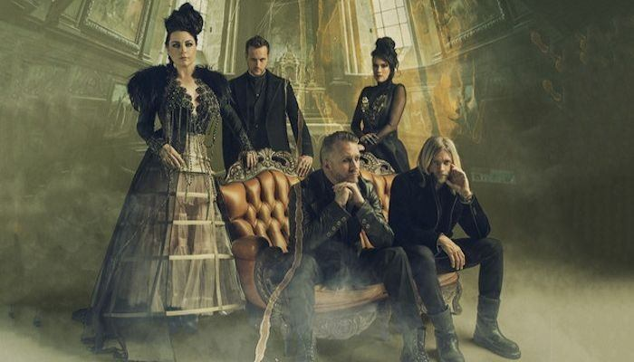

- Bring Me To Life
- My Immortal
- Going Under
Beste nummers
- Sweet Sacrifice
- Taking Over Me
- Haunted
Persoonlijke favorieten
Toen de band net begon, werd hun muziek als christelijke rock beschreven, de band heeft hier later afstand van genomen. Ze zien zichzelf als rockband, die rockmuziek maakt. Evanescence toont vooral kenmerken van nu metal.
Hun bekendste album was 'fallen', uitgekomen in 2003. De eerste single die van dit album kwam was 'Bring me to Life', dit nummer maakte ook deel uit van de soundtrack van de film 'Daredevil'. 'Going Under' en 'My immortal' zijn hierna als singles uitgebracht. 'Everybody's Fool' was de laatste single.